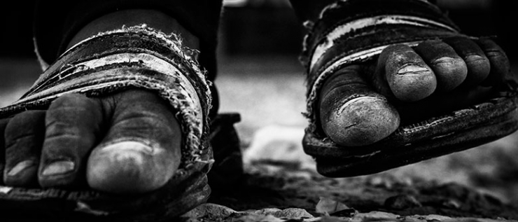
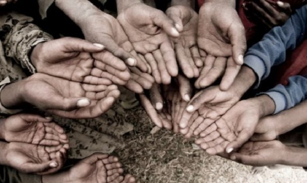

Street Children Around the World
Who are they?
StreetInvest operates under the description of street children from the UN Human Rights report from 2011 where they are referred to as ‘street-connected’ and ‘is understood as a child for whom the street is a central reference point- one which plays a significant role in his/her everyday life and identity’ [1]. We recognise this as including children that live and work on the street, but also children and young people who migrate between ‘home’ and the street. There has been much discussion about definitions and descriptions of street children since, but StreetInvest’s view is that these have largely only served to mystify understanding of who street children are. For StreetInvest, and for the street workers that meet these children, we recognise that each child is an individual demonstrating a range of other identities. Like any other child, a street child is a brother, sister, son, friend, worker, orphan, child, adolescent, and many more. It is these identities that a street worker will get to know. What is relevant to both the child and the street worker in working together is to reduce risk, enhance capabilities and strengthen relationships with family and community. The street worker is not working with a street child who is a problem but an individual in a street-connected situation which will shape a child’s journey.
What is Poverty?
"People are living in poverty if their income and resources (material, cultural and social) are so inadequate as to preclude them from having a standard of living which is regarded as acceptable by Irish society generally. As a result of inadequate income and other resources people may be excluded and marginalised from participating in activities which are considered the norm for other people in society." This is the Irish Government's definition of poverty in its National Action Plan for Social Inclusion 2007-20161. What it means is that people are living in poverty if they do not have enough money to do the things that most people in Ireland take for granted. Poverty can mean not having the money to buy enough food for your family, not being able to afford to heat your home in winter or having to buy second-hand clothes because you can't afford new ones. Poverty is more than not having the money for material things. It can also mean that you don't have the money for social activities like going to the cinema or having a meal out with friends or to have a holiday. This can lead to people feeling cut off from the rest of society because they don't have the money to participate.
Types of Poverty
In Ireland, data on poverty is collected and published by the Central Statistics Office (CSO). Two measures of poverty are used by the CSO to calculate the rate of poverty in Ireland: at risk of poverty and consistent poverty.
Causes of Poverty
There are a number of structural factors that contribute to the existence of poverty. The uneven distribution of economic resources such as wealth, employment and infrastructure, and of social resources like health services, education, transport and housing, means that not all people have the same opportunities. There are also other factors that make people more likely to be poor. One single factor might not be significant on its own, but when these factors are combined they increase the risk of poverty. Factors contributing to poverty include: Work: being unemployed or in a low-paid job makes people more likely to be poor. Age: many older people and children whose parents are poor are at greater risk of poverty than the general population. Health: people with long-term illnesses or who are disabled are at greater risk of poverty. Education: people who left school early or without qualifications are more likely to experience poverty. Family: one-parent families are more likely to be poor than two-parent families or single people. Location: living in a disadvantaged community or in an area with few employment opportunities increases the risk of poverty
The Effects of Poverty
Poverty has a negative effect on people's quality of life, on the opportunities open to them, and on their ability to participate fully in society. It can be difficult to break out of the cycle of poverty, as poor children are more likely to become poor adults. Poverty impacts on every aspect of a person's life: Money and Debt: many people who work in low-paid or insecure employment earn a wage that is not adequate to cover the basic costs of living for themselves and their families. Others are dependent on social welfare payments, whether because they are elderly, unemployed, a carer, a lone parent, or have a disability or long-term illness. When people find themselves unable to make ends meet on a low income, they often get into debt. For many people in poverty, access to mainstream financial services can be difficult, so they are more likely to borrow from moneylenders who charge a far higher rate of interest than banks or credit unions3. Education: growing up in poverty can affect people's future: children who grow up in poor families are more likely to leave school early and without qualifications, and to end up unemployed or in low-paid jobs - which means that they are more likely to be poor as adults4. Health: people who live in poverty are at greater risk of poor mental and physical health: they get sick more often and die younger than people who are better-off. Factors such as an inadequate diet, a higher rate of chronic illness, a lower level of participation in sport and leisure activities5, and a generally lower quality of life all contribute to lower levels of health and well-being among people who experience poverty6. Housing: people in poverty are more likely to be dependent on the State to meet their housing needs, whether through subsidised private-rented accommodation or social housing. They are also at greater risk of living in sub-standard accommodation and of becoming homeless. Social Exclusion: poverty can prevent people from participating as equals in society, from feeling part of their community and from developing their skills and talents. This process is often called social exclusion. For children growing up in poor families, poverty can mean not having the things their friends have, not being able to go on school trips, or having to get a part-time job to support the family. This can often lead to problems like bullying because poverty makes it harder to fit in
Poverty 39%
Unemployment 22%
Hunger 36%
Cultural Poverty 25%
Illiteracy 90%F & 60%M


